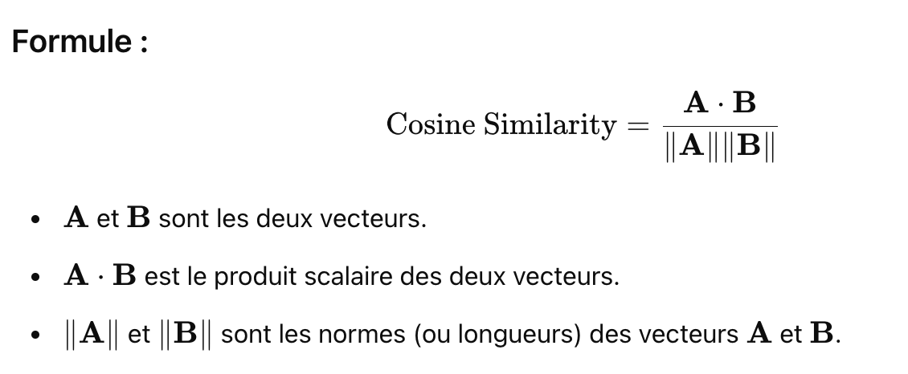
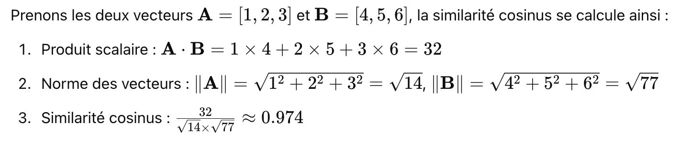
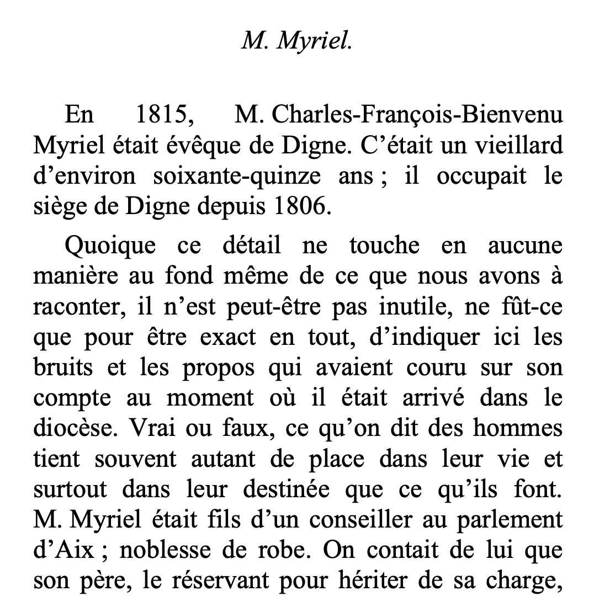
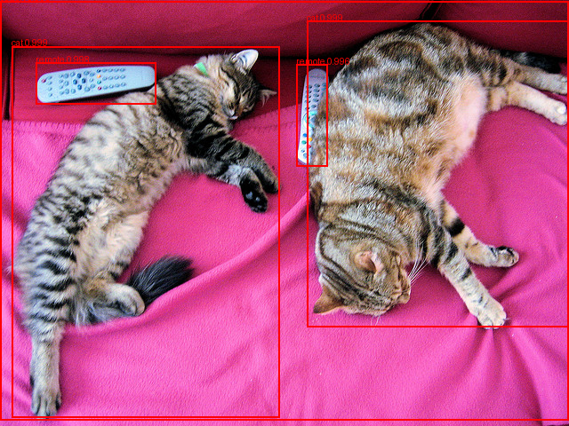

UNIVERSITE PARIS VIII - VINCENNES-SAINT-DENIS
DIRECTION DES SYSTEMES D'INFORMATION ET DU NUMERIQUE (DSIN)
Atelier IA
3. Working with Hugging Face
sanghun BANG
Le 28 janvier 2025
Sommaire
- Qu'est-ce que Hugging Face
- Reconnaissance d'entités nommées (NER)
- Similarité de phrases
- Texte en audio
- Modèles de reconnaissance automatique de la parole (ASR) dans Hugging Face
- Image vers texte
- Détection d'objets
Qu'est-ce que Hugging Face
- Bibliothèque Transformers
- Plateforme collaborative
- Facilité d'utilisation
Qu'est-ce que Hugging Face
Moddels

Qu'est-ce que Hugging Face
Datasets
Reconnaissance d'entités nommées (NER)
- La Reconnaissance d'Entités Nommées (NER) consiste à identifier et à classer les entités nommées dans un texte en catégories prédéfinies.
- Ex : Par exemple, "Apple a été fondée par Steve Jobs", "Apple" et "Steve Jobs" sont des entités qui doivent être identifiées.
- Lieu (LOC) / organisations (ORG) /inidivus (PER)
- Exercice (hugging002.ipynb)
Similarité de phrases
La similarité cosinus
 
Similarité de phrases
La similarité cosinus
Exercice (hugging_sentence.ipynb)
Texte en audio
Exercice (hugging_speech_rec.ipynb)
Modèles de reconnaissance automatique de la parole (ASR) dans Hugging Face
Exercice (hugging_speech.ipynb")
Image ver texte
Conversion des informations visuelles d'une image en données textuelles.
(hugging_img_txt1.ipynb)
Image ver texte
OCR

Conversion des images contenant du texte en texte numérique modifiable et consultable.
(hugging_img_txt2.ipynb)
Detection d'objets

Exercice (hugging_object_detection.ipynb)
Prochain atelier
- 1. Introduction to Natural Language Processing in Python
- 2. Introduction to LLMs in Python
- 3. Working with Hugging Face
- 4. Intermediate Deep Learning with PyTorch
- 5. Deep Learning for Text with PyTorch
- 6. Building Chatbots in Python
- 7. Working with Llama 3
- 8. Transformer Models with PyTorch
- 9. Developing LLM Applications with LangChain
- 10. Retrieval Augmented Generation (RAG) with LangChain
- 11. Beyond LLMs: Test Time Training, Differential transformer, Titans